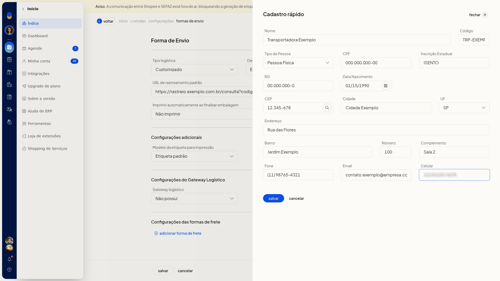

Cadastrar transportador no cadastro rápido da forma de frete
O cadastro rápido registra os dados de um transportador a partir da forma de frete, sem sair do formulário da forma de envio no ERP da Olist. Você informa nome, código e tipo de pessoa e, para pessoa física, documentos, endereço e contato.
Pré-requisitos
- Se Formas de envio não aparecer para você, peça acesso ao administrador da conta.
Importante
- Os campos do cadastro rápido não são obrigatórios.
- Em Data Nascimento, use o formato mm/dd/aaaa.
- O CEP é exibido como 12.345-678.
- Se a cidade não estiver cadastrada, a tela mostra Cidade não encontrada.
Instruções
-
Acesse Configurações > Configurações ERP > Vendas > Formas de envio.
-
Clique em Incluir forma de envio.
-
Em Configurações das formas de frete, clique em Adicionar forma de frete.
-
Em Transportador, digite um nome que não exista no cadastro. A tela mostra cadastro não encontrado.

-
Abra o cadastro rápido a partir de Transportador.
-
Preencha Nome e Código.
-
Em Tipo da Pessoa, selecione Pessoa Física, Pessoa Jurídica, Estrangeiro ou Estrangeiro no Brasil.

-
Para Pessoa Física, preencha os dados abaixo.
Documentos
- CPF: use o formato 000.000.000-00.
- IE
- RG
- Data Nascimento: use o formato mm/dd/aaaa.
Endereço
- CEP: o valor é exibido como 12.345-678.
- Cidade
- UF
- Endereço
- Bairro
- Número
- Complemento
Contato
- Fone: use o formato (11) 98765-4321.
- Celular: use o formato (11) 91234-5678.

- Clique em Cancelar para fechar o cadastro rápido sem gravar o transportador.
Resultado
Os dados ficam preenchidos no cadastro rápido. Cancelar encerra a tela sem criar o cadastro do transportador.